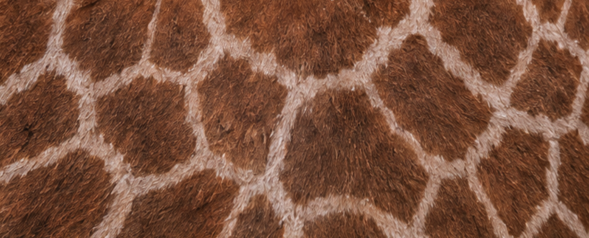
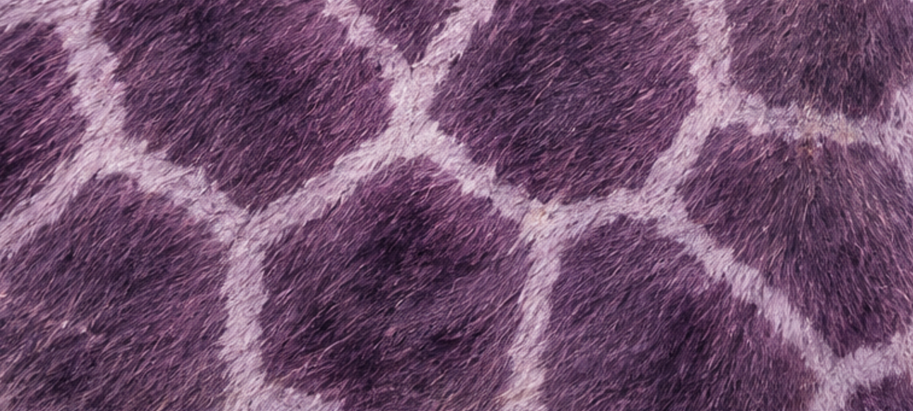

Rare / Research / Impact
The Purple Giraffe
A rare coat color. A deeper story.
At the Purple Giraffe Research Institute, we explore the science behind one of nature’s most intriguing phenomena. Introducing the purple-tinted giraffe.
Explore Our Research →The Discovery
What Makes the Purple Giraffe Unique?
In the study of large mammalian phenotypes, few occurrences capture scientific and public attention quite like coat color mutations. While mutations leading to melanism, leucism, or unpatterned coats are documented across various subspecies, the emergence of the “Purple-Tinted” Giraffe introduces a fascinating intersection between genetics, environmental resource availability, and maternal biology.
Unlike standard reticulated coats that consist of sharp, chestnut-brown patches, these rare specimens are described as exhibiting a subtle lavender-to-violet undertone within their darker patches. This concept does not describe a distinct genetic species; the proposed metabolic explanation requires scientific verification.
What causes the purple tint, and why is it so rare?
The Gestational Catalyst
Maternal Iron Levels
The proposed explanation explores whether maternal-fetal biology and trace mineral availability could influence developing hair follicles. In this hypothesis, unusually high maternal serum iron during the second trimester is suggested as a possible factor affecting the cellular chemistry of fetal pigmentation.
Further controlled research would be needed to determine whether iron levels can cause this kind of coat-color change and to establish a biological mechanism.
Explore the Coat Pattern →“The biochemical pathway is highly sensitive. The proposed mechanism suggests that changes during peak gestation could influence how developing hair reflects light, creating a rare, soft purple tint rather than the traditional deep amber.” Dr. Helena Vance
Observed Structural Alterations
The Difference in Detail
The visual contrast between standard giraffe coloration and the purple-tinted appearance is closer than it might seem. The effect is more noticeable in natural sunlight, where darker coat patches show a soft lavender-to-violet undertone.

